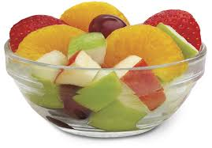

La Importancia de una Alimentación Saludable
Autor: [Zulema&Aime] | Grupo: [202] | Materia: [Cultura digital]
¿De qué trata?
La alimentación saludable es comer de forma balanceada para que nuestro cuerpo tenga energía y funcione bien. No se trata de hacer dieta, sino de elegir alimentos que nos nutran. Me interesó este tema porque muchos jóvenes comemos mucha comida chatarra y luego nos sentimos cansados o sin ganas de hacer nada.

3 Datos importantes
- El plato del bien comer: Es una guía que dice que debemos comer muchas frutas y verduras, suficientes cereales como tortilla o arroz, y pocas leguminosas y alimentos de origen animal.
- Agua simple: Tomar 6-8 vasos de agua al día ayuda a que tu cerebro y músculos trabajen mejor. Los refrescos tienen mucha azúcar y no hidratan igual.
- Comida chatarra: Las papitas, dulces y hamburguesas tienen mucha sal, azúcar y grasa. Si las comes diario te pueden dar problemas como sobrepeso o diabetes.